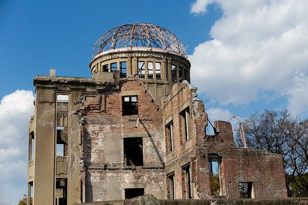
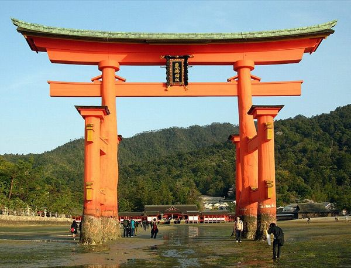

16 stops from the A-bomb Dome and the Hypocenter to the Museum and the Gates of Peace.
Open Peace Park tour →
14 stops from the ferry pier to Itsukushima Shrine, the temples, the ropeway and the Mt. Misen summit.
Open Miyajima tour →Each tour works offline after you open it once with signal (map tiles need a connection).